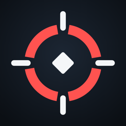

Champions VGC Dex — Support
Champions VGC Dex is a fast iPhone companion for competitive doubles: search any opponent mid-battle for its threat read, speed tiers, likely set, and type matchups; pin their team at preview; study real meta teams; and run the numbers in the damage calculator.
Get help or report a problem
Found a bug, a wrong number, or missing data? Have a feature request? Open an issue — include the Pokémon, the screen, and what you expected to see.
GitHub needs a free account. Existing reports: github.com/JordanUrbaezLu/vgcdex-support/issues
Prefer email? Write to paul3paulpaul@gmail.com — no account needed.
Frequently asked
Where does the data come from?
Ladder usage from Smogon's public usage statistics; meta teams from Smogon's sample-team threads (each team credited to its player); game data from the open-source PokéAPI and Pokémon Showdown projects. Full credits and licences are in the app under About.
How current is it?
The data is built into the app, so it works offline and loads instantly. It is refreshed with app updates; the data date is shown on the home screen.
Does the app collect my data?
No. There are no accounts, analytics, ads, or tracking. See the Privacy Policy.
I'm a rights holder or a player credited on a team.
Email paul3paulpaul@gmail.com to request a correction or removal privately, and it will be handled promptly.